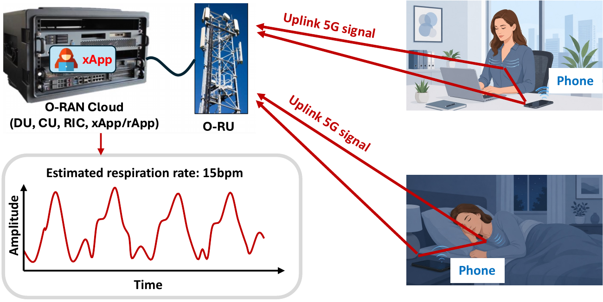
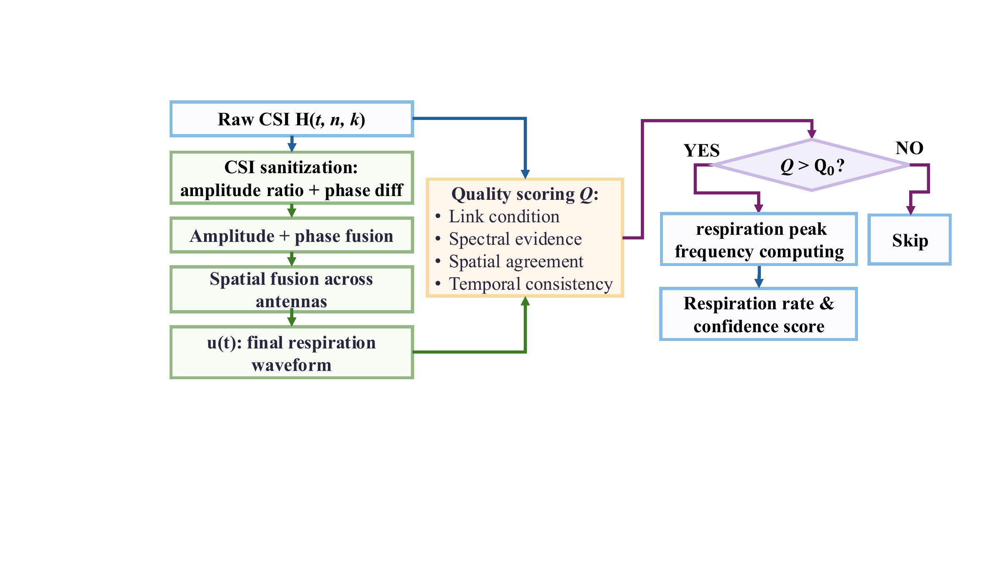
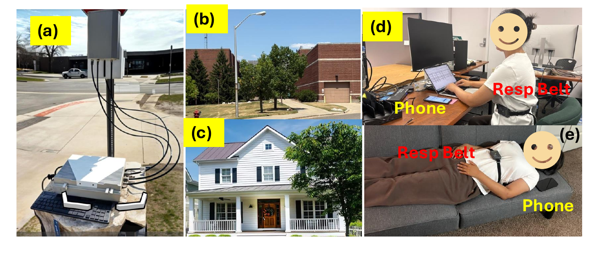
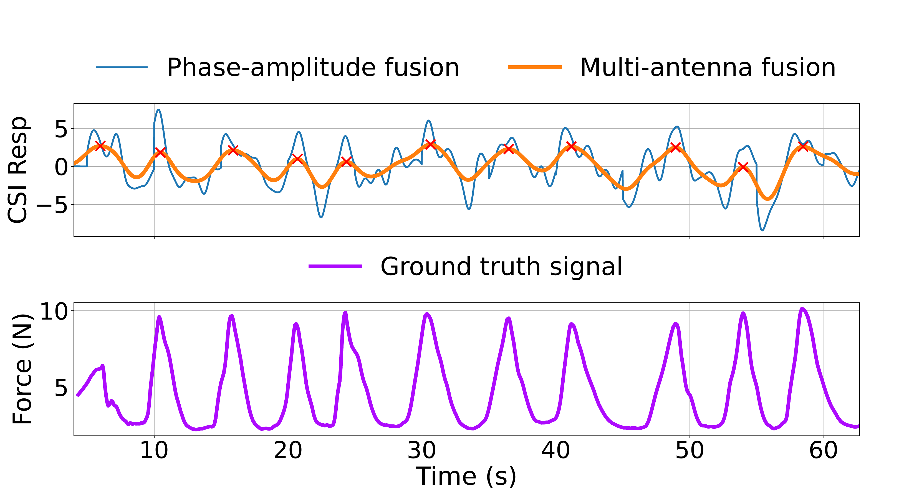
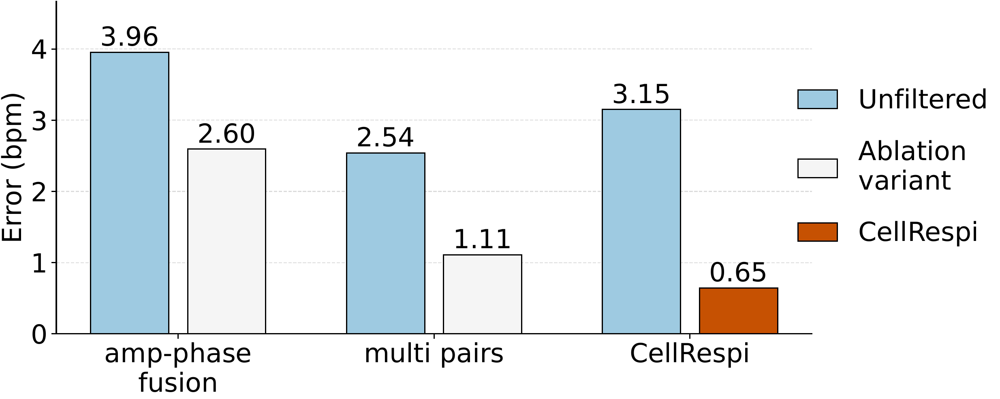

Load CSI snapshots
Read timestamped complex CSI arrays from the example `.npz` files and estimate recording quality.
5G CSI sensing · O-RAN privacy
This project studies whether radio measurements exposed through O-RAN interfaces can reveal a smartphone user's respiration. The artifact page provides a demo video, source code, example CSI data, and selected result figures without publishing the full paper PDF or LaTeX source.

A malicious xApp in the O-RAN cloud receives uplink CSI measurements and estimates a smartphone user's respiration rate from ordinary 5G signals.
The video demonstrates the workflow from loading CSI measurements to extracting and visualizing the respiration signal.
The provided Python script reproduces the core respiration extraction flow using amplitude, phase, quality scoring, and spatial fusion across antenna pairs.
Read timestamped complex CSI arrays from the example `.npz` files and estimate recording quality.
Compute amplitude ratios and phase differences for all six antenna pairs, then band-pass the respiration range.
Estimate frequency, SNR, peak ratio, temporal stability, and pair consistency before weighted fusion.
Generate plots, CSV/XLSX summaries, breath counts, estimated BPM, and reliability labels.
A small set of representative figures from the paper is included here.

The processing pipeline combines CSI preprocessing, amplitude and phase feature extraction, antenna-pair fusion, confidence filtering, and respiration-rate estimation.

The evaluation uses an outdoor 5G O-RAN platform, a commercial smartphone, and office/home scenarios with an RU–UE distance on the order of hundreds of meters.

A representative CSI-derived respiration waveform is compared against the synchronized wearable respiration belt used as ground truth.

The ablation highlights the contribution of amplitude-phase fusion, multi-pair spatial fusion, and confidence gating under long-range cellular CSI.
The repository is intentionally compact: one demo video, one runnable script, and example CSI snapshots that can be used to reproduce the basic workflow.
A visual walkthrough of loading measurements and extracting the respiration signal.
Open MP4 assetsPython implementation for CSI preprocessing, pair fusion, peak counting, and summary export.
Open Python source codeA lightweight set of timestamped `.npz` CSI snapshots for testing the processing pipeline.
Open sample example dataSet `DATA_DIRS` in the script to point at the example data folder, then run the extraction pipeline locally.
cd Privacy-Leakage-in-O-RAN-Remote-CSI-Based-Respiration-Eavesdropping-Using-5G-Signals
pip install numpy scipy matplotlib
# Edit source code/respiration_extraction_from_csi.py:
# DATA_DIRS = ["../example data"] or ["example data"]
python "source code/respiration_extraction_from_csi.py"The script writes figures and summary tables to `RES_figures`, including fused respiration plots, estimated BPM, breath counts, confidence scores, and reliability labels.
Read setup notes README Inspect parameters Python